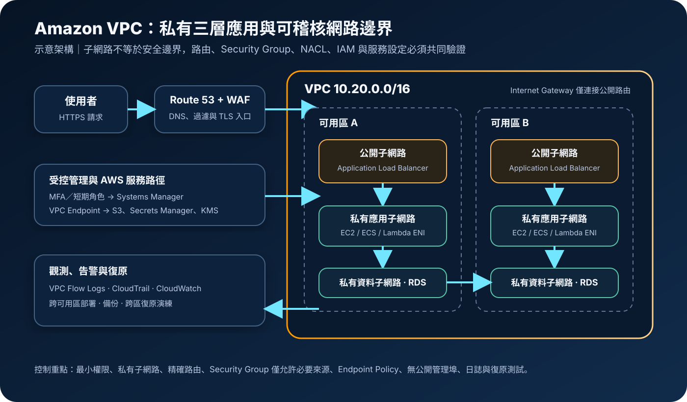

AWS 基礎介紹 05 · 2026-08-26
Amazon VPC：子網路、路由與網路隔離
作者：Dr. William｜雲端與資訊安全實務工作者
Amazon Virtual Private Cloud（Amazon VPC）是在 AWS 區域內建立邏輯隔離虛擬網路的基礎服務。工作負載會配置於指定 IP 位址範圍、子網路與路由邊界，再透過 Internet Gateway、NAT Gateway、VPC Endpoint、VPN 或 Direct Connect 連接外部。VPC 提供網路控制面，但「放在 VPC 裡」不等於安全；公開位址、路由、Security Group、Network ACL、服務政策與身分授權必須一起設計。
服務定位：VPC 負責 AWS 工作負載的位址、路由、分段、連線與網路觀測基礎。它不是身分授權、Web 應用防火牆、機密管理或資料備份服務；需要 API 權限治理、應用層攻擊過濾、機密輪替與災難復原時，仍須搭配 IAM、AWS WAF、Secrets Manager、KMS、CloudTrail、CloudWatch 與備份機制。
核心概念：位址、子網路、路由與狀態
- VPC 與 CIDR：建立 VPC 時指定 IPv4 CIDR，也可加入 IPv6 CIDR。位址範圍需避免與企業網路、其他 VPC 及併購環境重疊；重疊會限制 Peering、Transit Gateway、VPN 與路由整合。
- 子網路與可用區：每個子網路只位於一個可用區。公開或私有不是子網路的固定屬性，而是由路由與資源設定共同形成；具有通往 Internet Gateway 的路由，且資源具公開位址與允許規則，才可能直接對外連線。
- 路由表：路由依最長前綴比對決定封包下一站。Internet Gateway 支援網際網路連線；NAT Gateway 讓私有 IPv4 工作負載發起對外連線，但不接受未經請求的入站連線。
- Security Group：Security Group 是資源 ENI 層的有狀態虛擬防火牆，只設定允許規則；回應流量會被追蹤。規則應引用必要的 Security Group、前綴清單或精確 CIDR，而非廣泛開放。
- Network ACL：NACL 在子網路邊界無狀態評估允許與拒絕規則，進出方向都要涵蓋回程與臨時連接埠。它適合額外的粗粒度護欄，不應取代 Security Group 的工作負載最小開放。
- VPC Endpoint：Gateway Endpoint 可讓 S3 與 DynamoDB 流量不經 Internet Gateway 或 NAT；Interface Endpoint 以 PrivateLink 在子網路建立私有網路介面。端點政策、Security Group、DNS 與服務端資源政策仍需限制。
- 連線與共享：VPC Peering 不提供轉送路由；Transit Gateway 可集中連接多個 VPC 與內部網路；VPN 走加密網際網路，Direct Connect 提供專線連線，但需要另行規劃冗餘與加密需求。
適合與不適合的使用情境
適合
- 將 Web、應用與資料層分置於公開及私有子網路，限制只允許必要層級互通。
- 讓 EC2、ECS、EKS、RDS、內部負載平衡器及支援 VPC 的託管服務使用受控私有位址。
- 透過 VPN、Direct Connect、Transit Gateway 或 PrivateLink 連接混合雲與多帳號環境。
- 以 VPC Flow Logs、Traffic Mirroring、Reachability Analyzer 和 Network Access Analyzer 驗證及觀測網路路徑。
不適合
- 用子網路分段取代 IAM 最小權限、MFA、短期憑證與服務端資源政策。
- 只靠私有 IP 保護資料，卻未加密傳輸與靜態資料，也未限制 KMS、Secrets Manager 或 Parameter Store 的存取。
- 把 NAT Gateway 當成入站防火牆、WAF、DDoS 防護或完整出站內容檢查設備。
- 為單純公開靜態內容建立複雜伺服器網路；S3 與 CloudFront 等託管架構可能更直接。
示意故事案例：跨可用區的預約平台
以下為示意案例，非真實客戶案例。某預約平台在單一區域建立一個 VPC，將 Application Load Balancer 放在兩個可用區的公開子網路，應用服務與 RDS 放在對應的私有子網路。公開路由只存在於負載平衡層；應用 Security Group 僅接受負載平衡器 Security Group 的指定連接埠，資料庫只接受應用 Security Group，管理者不開放 SSH 或 RDP 至網際網路。
維運人員經企業身分來源、MFA 與短期角色使用 Systems Manager Session Manager；工作負載透過 Interface Endpoint 私下存取 Secrets Manager、KMS 與 CloudWatch，S3 流量使用 Gateway Endpoint。必要更新流量經每個可用區的 NAT Gateway 對外，並以 DNS、路由與健康檢查監測失效。VPC Flow Logs 送往受隔離的日誌位置，CloudTrail 記錄網路控制面變更，CloudWatch 對拒絕流量、NAT 錯誤與異常變更告警。
建置與運作流程
- 盤點網路需求：確認區域、可用區數量、IPv4/IPv6、服務數量、預估成長、企業網路範圍、法規、RTO/RPO 與跨區需求。
- 規劃不重疊 CIDR：保留成長空間，將公開、應用、資料、端點與管理用途分段；把位址配置納入 IPAM 或一致的基礎設施程式碼。
- 建立跨可用區子網路：至少將關鍵層分布到兩個可用區。只有必要的入口元件位於公開路徑，應用與資料層不配置公開位址。
- 設計路由與出口：明確分離 Internet Gateway、NAT Gateway、Endpoint、Transit Gateway 與內部路由。避免未審查的預設路由與轉送裝置造成繞道。
- 套用最小網路權限：Security Group 以服務間必要流量為準，管理連線採 Systems Manager 或受控跳板；NACL 僅作額外護欄，並測試回程與臨時連接埠。
- 建立身分與機密邊界：人員使用 MFA 與短期角色，工作負載使用 IAM 角色。機密放在 Secrets Manager 或 Parameter Store，傳輸使用 TLS，敏感資料與日誌以 KMS 金鑰加密。
- 加入私有服務端點：依資料路徑建立必要 Endpoint，啟用 Private DNS 並收斂 Endpoint Policy、Security Group、IAM 及資源政策，避免端點成為廣泛外傳通道。
- 啟用觀測與變更治理：對關鍵介面、子網路或 VPC 啟用 Flow Logs；用 CloudTrail 記錄 Security Group、路由、NACL、Gateway 與 Endpoint 變更，再由 CloudWatch 告警。
- 驗證可達性與復原：用 Reachability Analyzer、合成測試及故障演練確認允許與禁止路徑；測試可用區、NAT、VPN、Direct Connect 與區域失效時的備份與跨區切換。
成本、可用性與維運考量
- 基礎成本：建立 VPC、子網路、路由表、Internet Gateway、Security Group 與 NACL 一般不另收費；Public IPv4、NAT Gateway、Interface Endpoint、Transit Gateway、VPN、Flow Logs、Traffic Mirroring 與跨可用區或跨區傳輸可能計費。
- NAT 成本：NAT Gateway 通常按小時計費並按處理資料量計費；大量 S3 或 DynamoDB 流量可評估免費的 Gateway Endpoint，其他 AWS 服務可比較 Interface Endpoint 的小時、資料與跨區成本。
- 跨可用區流量：高可用設計若頻繁讓工作負載跨可用區存取 NAT、Endpoint 或資料庫，可能增加延遲與資料傳輸費。關鍵出口與端點宜依失效模型部署在所需可用區。
- 可用性邊界：VPC 是區域性資源，子網路屬單一可用區。跨可用區部署可處理單一可用區故障，但不等於跨區災難復原；跨區網路、資料複寫、DNS 切換與備份仍需另建。
- 位址耗盡：過小 CIDR、介面型服務快速增加或大量容器會耗盡 IP。應監測可用位址、預留擴充範圍並避免把位址規劃綁死在早期單一架構。
VPC 特有的資安風險與控制
- 非預期公開暴露：Internet Gateway 路由、公開 IPv4、寬鬆 Security Group 與公開服務設定組合後可能對外暴露。禁止未核准公開位址，以 Config、Security Hub、Network Access Analyzer 與外部掃描持續驗證。
- 過度寬鬆網路規則：對所有來源開放管理或資料庫連接埠會擴大攻擊面。使用 Security Group 參照、精確 CIDR 與必要連接埠，禁止將公開管理埠當作日常維運方式。
- 路由與 DNS 劫持：錯誤路由、網路設備或 Private DNS 設定可能使流量繞過檢查或送往錯誤端點。網路變更採最小 IAM 權限、雙人審查、基礎設施程式碼與 CloudTrail 告警。
- NACL 狀態誤判：NACL 無狀態，漏掉回程或臨時連接埠會造成中斷；規則順序也可能讓例外先匹配。將 NACL 保持簡單，建立允許與拒絕路徑測試，不以臨時全面開放處理故障。
- 私有端點資料外傳：Endpoint 若政策過寬，遭入侵角色可能透過私有路徑存取未預期帳號或資源。同步收斂 Endpoint Policy、IAM、KMS 金鑰與服務資源政策，並以 CloudTrail 資料事件及服務日誌監控。
- 東西向移動：平坦網路與共用 Security Group 會讓單一工作負載遭入侵後橫向存取。依信任層與服務分段、限制 egress、使用工作負載身分及最小 IAM 權限，並保護 Secrets Manager/Parameter Store。
- 觀測盲點：Flow Logs 不等於封包內容、應用日誌或所有服務事件，且建立後仍須確認涵蓋範圍與交付狀態。將 Flow Logs、CloudTrail、CloudWatch、負載平衡器與 DNS 日誌集中關聯。
- 單一出口與單區依賴：多個可用區共用單一可用區 NAT 或虛擬設備，可能同時造成可用性與跨區成本風險。按需求建立區域化出口、健康檢查、備份設定與跨區復原演練。
共同責任邊界
AWS 負責 VPC 所依賴的資料中心、實體網路、硬體、虛擬化層與受管網路服務基礎設施安全。客戶負責 CIDR 與子網路規劃、路由、公開位址、Security Group、NACL、Endpoint Policy、DNS、VPN 與混合雲設定，以及 IAM 最小權限、MFA、短期憑證、KMS 加密、機密管理、CloudTrail/CloudWatch、備份與跨區復原。AWS 不會自動判斷哪些工作負載可以公開，也不會替客戶驗證所有允許與禁止路徑。
上線前可執行檢查清單
- □ VPC 與企業網路 CIDR 不重疊，IPv4/IPv6、成長與 IP 耗盡風險已評估。
- □ 關鍵服務跨至少兩個可用區；公開、應用、資料、端點與管理路徑已分層。
- □ 只有必要入口具公開路由與位址，EC2、資料庫及管理介面不存在未核准公開存取。
- □ Security Group 只允許必要來源與連接埠；NACL 規則順序、回程與臨時連接埠已測試。
- □ 人員使用 MFA 與短期憑證，工作負載使用 IAM 角色；網路控制面權限符合最小權限。
- □ 機密存放於 Secrets Manager 或 Parameter Store，傳輸採 TLS，敏感資料與日誌依需求使用 KMS。
- □ Gateway/Interface Endpoint 的政策、Private DNS、Security Group、IAM 與資源政策已共同驗證。
- □ CloudTrail 記錄網路變更，VPC Flow Logs 正常交付，CloudWatch 對暴露、拒絕暴增與出口異常告警。
- □ NAT、Endpoint、Public IPv4、Transit Gateway、Flow Logs 與跨可用區資料處理成本已估算並設告警。
- □ 可用區、NAT、混合雲與區域故障的備份、DNS、跨區網路與資料復原流程已按 RTO/RPO 演練。
AWS 官方一手來源
- Amazon VPC User Guide｜What is Amazon VPC?（查閱：2026-08-26）
- Amazon VPC User Guide｜Security best practices（查閱：2026-08-26）
- Amazon VPC User Guide｜Configure subnets（查閱：2026-08-26）
- Amazon VPC User Guide｜Control traffic with security groups（查閱：2026-08-26）
- Amazon VPC User Guide｜Control traffic with network ACLs（查閱：2026-08-26）
- Amazon VPC User Guide｜NAT gateways（查閱：2026-08-26）
- AWS｜Amazon VPC pricing（查閱：2026-08-26）
- AWS｜Shared Responsibility Model（查閱：2026-08-26）
內容說明
本文依查閱日可用的 AWS 官方文件整理，作為基礎學習與架構討論材料；實際部署仍須依區域支援、最新價格、組織政策、法規與風險評估調整。